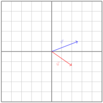
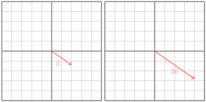
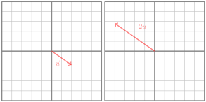

We have a few vector operations that are worth mentioning. We start with what are called “unary" operators, or operations that only require a single input. Examples of unary operators on the real numbers are negation (i.e. turning \(4\) into \(-4\)), or reciprocation (i.e. turning \(4\) into \(1/4\)). The first unary operator we’ll look at for vectors is magnitude.
Definition1.2.1.Magnitude.
Let \(\vcv\) be an \(n\)-dimensional vector, that is \(\vcv=\bmat{v_1\\v_2\\ \vdots \\ v_n}\text{.}\) Then the magnitude of \(\vcv\) is:
A related definition is that of the unit vector. Technically you can think of this as a unary operation that takes a vector and returns the unit version of that vector.
Definition1.2.3.Unit Vector.
We say that \(\vcv\) is a unit vector if \(||\vcv||=1\text{.}\) We can find a unit vector that is parallel (has the same direction) of \(\vcv\) by dividing \(\vcv\) by its own magnitude. That is:
We say that \(\vcv\) is the zero vector if \(||\vcv||=0\text{,}\) and we write \(\vcv=\vzero\text{.}\)
The second important unary operation is negation.
Definition1.2.5.Vector Negation.
Let \(\vcv\in\bbr^n\text{,}\) that is, \(\vcv=\bmat{v_1\\v_2\\ \vdots \\ v_n}\text{.}\) Then \(-\vcv=\bmat{-v_1\\-v_2\\ \vdots \\ -v_n}\text{.}\)
Then that brings us into our second category of operations, “binary" operators, or operators that require two inputs. Examples of binary operators on real numbers are addition, multiplication, etc. We see analogues for these for vectors in vector addition and scalar multiplication.
Definition1.2.6.Vector Addition.
Let \(\vcv\) and \(\vcu\) be two vectors in \(\bbr^n\text{.}\) Then to add these two vectors, we add the corresponding coordinates. That is,
Given a vector \(\vcv\) in \(\bbr^n\) and a number \(c\) in \(\bbr\) (called a scalar), their product is defined by distributing the scalar to each coordinate of the vector. That is,
\begin{equation*}
c\vcv=c\bmat{v_1\\v_2\\ \vdots\\v_n}=\bmat{cv_1\\cv_2\\ \vdots \\ c v_n}.
\end{equation*}
The way we add vectors is “timewise". Vectors are typically drawn as arrows with a length(magnitude) and direction. If we place the tail of the vector \(\vcv=(x,y)\) on the origin, the tip of the arrow would land at the point \((x,y)\text{.}\)

Figure1.2.8.Vectors in standard position.
Geometrically, to add two vectors, we follow one, then follow the other. That is, we place them tail to tip:
Note, commutativity holds! If we follow \(\vcv\) first, then \(\vcu\text{,}\) we end up at the same spot as if we followed \(\vcu\) first then \(\vcv\text{.}\) In fact, this makes a parallelogram.
The vector drawn from the starting point to the ending point is exactly the sum of the two vectors. The difference of two vectors can be found from the same triangle as the sum:
Here, \(\vcv+\vcw=\vcu\text{.}\) Then it follows that \(\vcu-\vcv=\vcw\text{.}\) That is, the difference between two vectors is the vector that goes from the tip of the second (“negative") vector to the tip of the second (“positive") vector.
To multiply a vector by a scalar, we just scale the vector. In other words, the magnitude of the vector increases or decreases. For example:

Figure1.2.11.Scalar multiplication.
If that scalar is negative, the direction of the vector reverses! This is similar to how negative numbers go in the opposite direction of positive numbers along the number line. Another way of verifying this is that if you add \(\vcv+(-\vcv)\text{,}\) you should get the 0 vector, \(\vzero\text{!}\) In \(\bbr\times \bbr\text{,}\)\(\vzero=(0,0)\text{.}\)

Figure1.2.12.Negation
Here, \(-2\vcu\) is in the opposite direction of \(\vcu\text{,}\) and twice as long!
Exercise1.2.13.Operating on Vectors Geometrically.
Consider the Geogebra interactive below. You can change the vectors \(\vcu\) and \(\vcv\) by dragging the dots at their endpoints. You can move the vectors \(\vcu\) and \(\vcv\) around by dragging the vectors themselves.
Figure1.2.14.Vector Sandbox by Steve Phelps powered by Geogebra
Drag the vectors \(\vcv\) and \(\vcu\) such that they are tail to tip. What do you observe about the length between the tail of \(\vcv\) and the tip of \(\vcu\text{.}\) What happens if you switch the order of the two vectors?
Drag the vectors \(\vcv\) and \(\vcu\) such that the tails of \(\vcv\) and \(\vcu\) coincide. How does this relate to \(\vcv-\vcu\text{?}\) What about \(\vcu-\vcv\text{?}\)
Exercise1.2.15.
Find the following:
\(\displaystyle (1,4)+(3,2)=\)
\(\displaystyle 3(2,3)-2(-1,6)=\)
Answer.
\((4,6)\text{.}\)
\((8,-3)\text{.}\)
Note that we can write vectors in an alternative way using what are called elementary basis vectors.
Definition1.2.16.Elementary Basis Vectors in \(\bbr^2\) and \(\bbr^3\).
In \(\bbr^2\text{,}\) we define two elementary basis vectors as